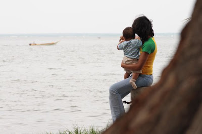

J.R. Ferrer-Paris
Homo faber
Ciencia y academia
Mis publicaciones
Productos científicos
Proyectos reproducibles
Repositorios / código
Eventos
Biodiversidad
Mis ecosistemas favoritos
Mis especies favoritas
Homo ludens
Mi mundo
Futbol
Ulysses
Todos los nombres
How to…
(re-)create this site
En esta página
Imágenes de Maracaibo
Observaciones en
iNaturalist
Editar esta página
Informar de un problema
Maracaibo
Venezuela
Familia
Origenes
IVIC
Mi ciudad natal, única e irrepetible.

Vista al lago de Maracaibo
por
JR Ferrer-Paris @ Google Photos
Imágenes de Maracaibo
Observaciones en
iNaturalist